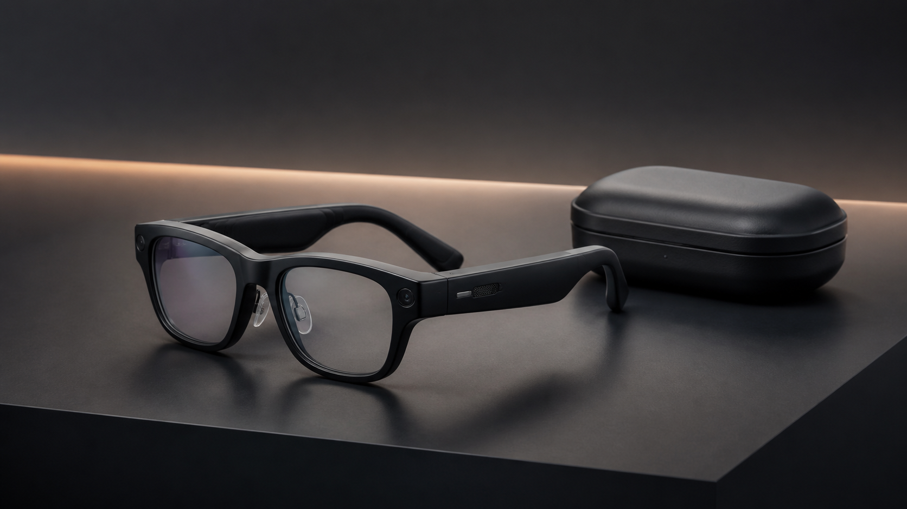

status: draft｜2026-08-13｜v1.3｜未公開
普通の眼鏡にAIが入る。「Meta Glasses」は旅の相棒になるのでしょうか
こんにちは、ろぶーです。いかにも機械という眼鏡ではなく、普通に見える眼鏡で写真を撮り、音楽を聴き、AIに話しかける。旅で使うなら、僕はそのくらい自然な方がいいと思っています。

編集部制作のAI生成イメージです。公式写真でも、特定モデルの正確な外観でもありません。
これはARグラスではありません
MetaとEssilorLuxotticaが2026年6月23日に発表した「Meta Glasses」は、カメラ、オープンイヤースピーカー、マイク、Meta AIをまとめた画面のないAIグラスです。ディスプレイ型ARでも、網膜投影型でもありません。
価格は299ドルから
計26スタイル、StandardとLargeのフレーム、度付きレンズ対応。本体バッテリーは8時間超、充電ケースを含め最大40時間分の追加電力が案内されています。新AIモデルMuse Sparkは米国・カナダから開始し、順次拡大予定です。
旅では便利。でも、カメラには気をつけたい
景色を見たまま写真に残せるのは便利です。一方、撮影中は前面の白いLEDが点滅するとはいえ、人物を撮るなら同意が必要です。美術館、医療機関、学校、機密区域では各施設の規則を優先してください。
日本で買えるのか
Ray-Ban Meta（Gen 2）とOakley Metaは2026年5月21日に日本発売が発表されています。しかし、この新シリーズの日本発売、正式価格、対応機能、保証、修理窓口は未確認です。299ドルを単純換算して国内価格とは言えません。
注意：歩行者向けナビゲーションは今後提供予定です。ソフトウェア更新で機能、言語、地域が変わる可能性があります。カメラ、マイク、位置・音声情報の扱いは必ず利用前に確認してください。
公式出典
情報確認日時：2026年8月13日（日本時間）